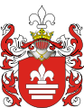
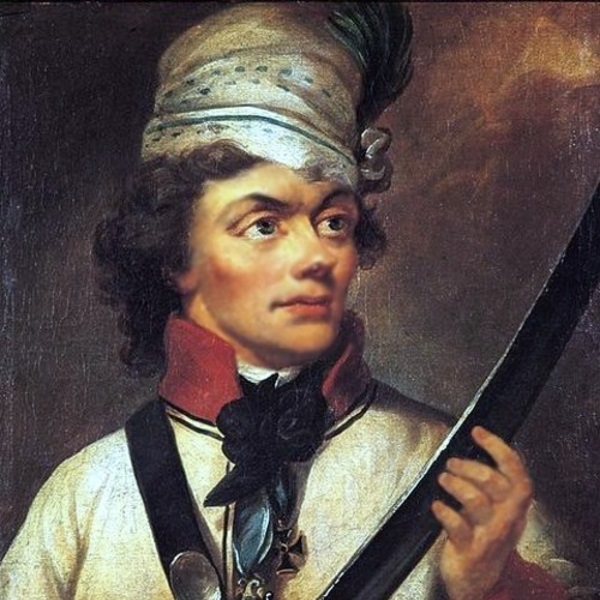
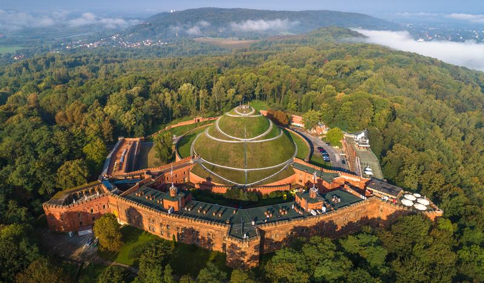
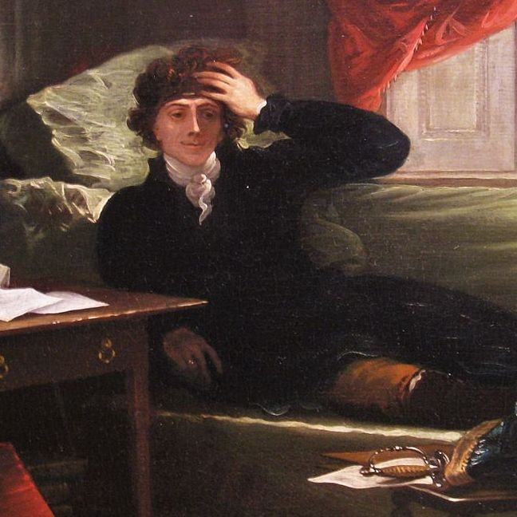

Powstanie Kościuszkowskie

Tadeusz Kościuszko

Tadeusz Kościuszko kim był?
Tadeusz Kościuszko (1746-1817) - naczelnik polskiej insurekcji z 1794 roku, pierwszego wielkiego powstania narodowego przeciw Rosji, następnie przeciw Prusom Odniósł zwycięstwo pod Racławicami, w której odznaczyła się piechota chłopska zwana. kosynierami, ogłosił Uniwersał połaniecki uwalniający chłopów-żołnierzy od poddaństwa. Odznaczył sie w wojnie o niepodległość Stanów Zjednoczonych. 200 lat temu w Krakowie upamiętniono go, usypując w latach 1820-1823 kopiec jego imienia.
Dzieciństwo i wykształcenie
Tadeusz Kościuszko, urodzony 4 lutego 1746 roku w Mereczowszczyźnie na terenie dzisiejszej Białorusi, był jednym z najważniejszych bohaterów narodowych Polski i Stanów Zjednoczonych. Jego dzieciństwo i wykształcenie miały znaczący wpływ na jego późniejszą działalność jako wojskowego i polityka.
Zdjęcie Tadeusz Kościuszki z lat młodzieńczych.
Powstanie Kościuszkowskie: Walka o Wolność i Niezależność
Powstanie Kościuszkowskie, które miało miejsce w 1794 roku, było jednym z najważniejszych wydarzeń w historii Polski. Było to powstanie przeciwko rozbiorowej polityce europejskich mocarstw, które dążyły do podziału i zniewolenia Rzeczypospolitej. Powstanie to stanowiło wyraz determinacji narodu polskiego do walki o wolność i niezależność.
Rola Tadeusza Kościuszki:
Tadeusz Kościuszko, wybitny wojskowy i bohater narodowy, odegrał kluczową rolę w powstaniu. Objął dowództwo nad siłami powstańczymi i stał się symbolem walki o wolność. Jego umiejętności taktyczne i zdolności inżynieryjne przyczyniły się do sukcesów militarnych powstania.
Przebieg powstania:
Powstanie Kościuszkowskie rozpoczęło się 24 marca 1794 roku. Powstańcy zdołali zdobyć wiele strategicznych miejscowości i utworzyć tymczasową władzę. Jednak powstanie napotkało trudności ze względu na przewagę liczebną wojsk rosyjskich i pruskich. Mimo to, powstańcy stawiali zacięty opór i dokonywali heroicznych czynów na polach bitewnych.
Upadek powstania i jego dziedzictwo:
Niestety, powstanie zakończyło się klęską. Powstańcy zostali pokonani przez rosyjsko-pruskie wojska i powstanie zostało stłumione. Niemniej jednak, powstanie Kościuszkowskie pozostawiło trwałe dziedzictwo. Stało się symbolem walki o wolność i niezłomności, inspirując kolejne pokolenia Polaków do walki o niepodległość.
Podsumowanie:
Powstanie Kościuszkowskie było ważnym wydarzeniem w historii Polski. Było wyrazem walki narodu polskiego o wolność i niezależność w obliczu trudności i rozbiorów. Dzięki odwadze i determinacji Tadeusza Kościuszki oraz innych powstańców, pozostawiło trwałe dziedzictwo i przypomina nam o nieustającej potrzebie obrony naszych wartości i suwerenności.

Tadeusz Kościuszko biografia
Inne artykuły
Tadeusz Kościuszko biografia